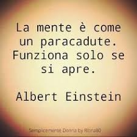

Sono Leonardo Campiello e vivo a Garino, penso di essere una persona simpatica e curiosa. Mi piace fare sport
e amo gli animali, ho 3 cani e 2 gatti .
Un aspetto della mia vita che ritengo importante condividere è che ho sempre voglia di fare qualcosa
per riuscire a rendermi utile per le persone a cui tengo.
Nel tempo libero mi piace fare sport, ho fatto ginnastica artistica per 13 anni e ho smesso l'anno scorso
per iniziare pesistica, come sport pratico anche snowboard che è un'altra mia passione riguardo gli sport,
ho iniziato da piccolo quando avevo 5 anni con mio padre e continuo ancora ora ad andarci.
Un altra mia passione sono i video giochi, ci passo molte ore sia con i miei amici sia da solo
anche solo per rilassarmi.
Quando riesco cerco sempre di uscire con i miei amici qunado ho del tempo libero e cerco sempre di divertirmi
il più possibile finche posso
In questi ultimi anni, ho sviluppato varie abilità:
Dopo il diploma non so ancora bene cosa farò ma quasi sicuramente frequenterò l'Università, anche se non mi è ancora ben chiara la
facoltà che sceglierò (penso ingegneria, ma devo decidere nello specifico quale tipologia); dopo l'università, non
so ancora cosa farò.
Una frase che ho sentito da bambino e che inspira sia me che mio fratello più grande è "La mente è come un paracadute,
funziona solo se si apre" di Albert Einstein. Mi aiuta a ricordare che devo sempre essere curioso e non avere uno
stile mentale chiuso ma essere sempre pronto ad accettare i cambiamenti.
